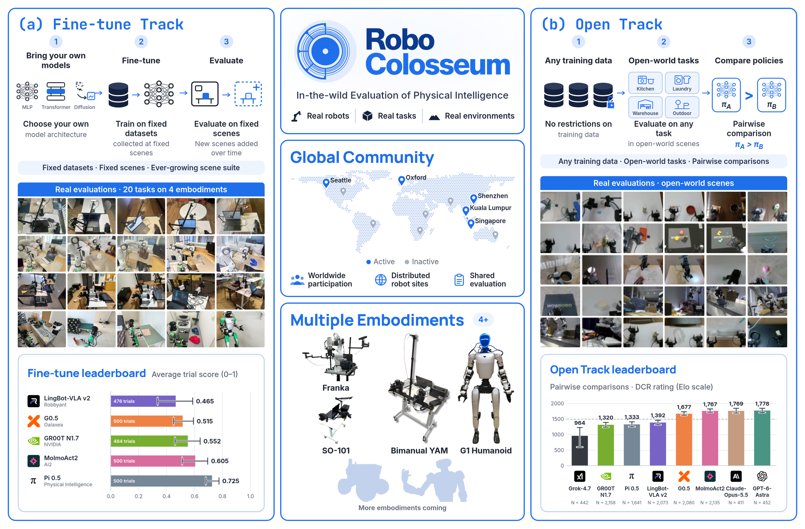
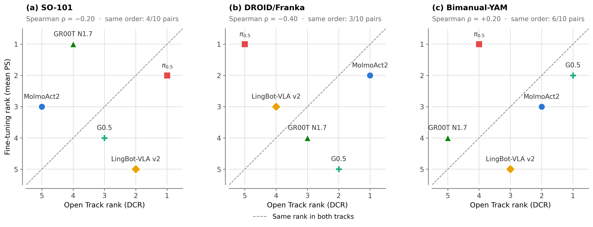
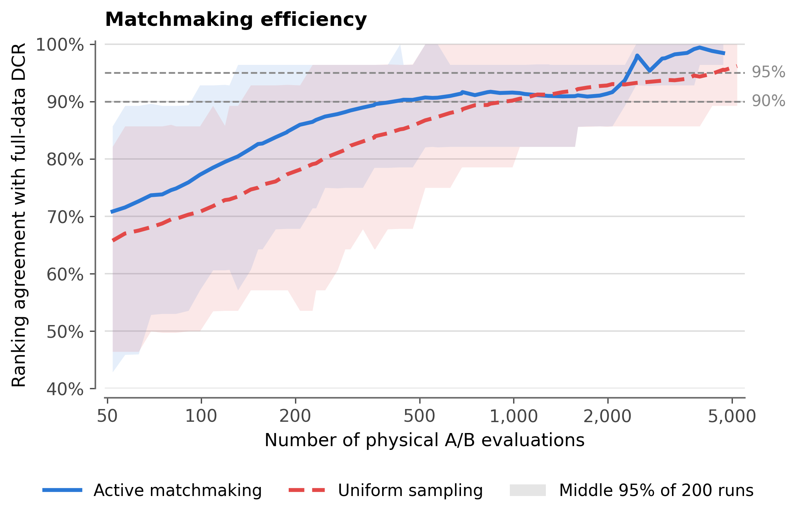

Contents · 12 sections
1Why an evaluation network like this is needed2Overall structure: what each track holds fixed3Open Track: how to compare across tasks of different difficulty4Active matchmaking: spend expensive trials on the least certain comparisons5Fine-tune Track: how well models do after fine-tuning on the same demonstrations6Result 1: out of the box, general large models hold their own against VLAs, but nobody is reliable7Result 2: after fine-tuning, who is strongest depends on the robot and the task8Result 3: out-of-the-box rank does not predict rank after fine-tuning9Result 4: are the rankings reliable, and how many trials are needed?10The limitations I see11How a model-evaluation team could borrow from it12ConclusionSHARE
People who build or evaluate robot models should read this paper, because it shows with a large set of real-robot comparisons that a model's rank "out of the box" and its rank "after fine-tuning on the same demonstrations" can clearly disagree, so a single leaderboard is not enough for choosing a model. The "physical intelligence" the paper talks about comes down, in this paper, to a model's ability to complete manipulation tasks on real robots (including a humanoid manipulating while walking). RoboColosseum is an evaluation network spread over 124 real-world sites (offices, food courts, homes, factories and more) with two tracks. In the Open Track, the VLAs (models that take camera images and a text instruction and output robot actions directly) use weights already trained for that robot, with no further training on the specific task; two anonymous models run one after the other on the same robot and the same task, and an on-site evaluator compares them. In the Fine-tune Track, each model starts from its own base pretrained weights, is fine-tuned on the same 100 demonstrations per task, and is then evaluated on fixed tasks (base weights typically come from pretraining on data from many robots; robot-trained weights have been trained on one robot's data, as the next section explains). On the Franka arm, π0.5 ranks fifth among the five VLA models in the Open Track and first after fine-tuning (the two tracks also differ in tasks and ranking metric, as discussed below). Success rate alone also hides differences: in the Fine-tune Track, on the Unitree G1 humanoid no policy completes any of the five tasks after fine-tuning, yet the policies' average progress (each task lists a few progress criteria, and a trial scores the fraction of them it meets) ranges from 13.3% to 23.2%.
Why an evaluation network like this is needed
Start with how today's robot policies are built. The subjects of this evaluation are VLA (vision-language-action) models: given camera images and one text instruction, they directly output robot actions (on the three arms in this paper, target positions for each joint and the gripper). They are typically first pretrained on demonstrations from many robots and many tasks, which gives base weights; further training on a large dataset from one particular robot gives weights trained for that robot (for the Franka, DROID, a large dataset of Franka-arm demonstrations). On a new task, the robot-trained weights can be tried directly; to do better, a model is usually fine-tuned on demonstrations of that task. The two tracks below test these two uses: the Open Track tries the robot-trained weights directly, and the Fine-tune Track starts from the base weights and fine-tunes on task demonstrations. The five VLAs evaluated here all belong to this family: Nvidia's robot model GR00T N1.7, π0.5, MolmoAct2, G0.5 and LingBot-VLA v2. Real-robot evaluation has mostly been done in a single lab, with controlled tasks and environments, reporting success rates.
The problem is that such numbers are hard to compare with each other. Move a task with the same name to another site and the object placement, camera position, lighting and object materials all change. It is then unclear whether a difference comes from the model or from the scene. Simulation allows repeated resets and precise control of conditions, but its sensing, calibration and physics differ from the real world, so simulated scores do not necessarily predict real-robot performance. Real-robot evaluation, in turn, is labor-intensive: every trial needs someone to set up the scene, reset it and supervise, so studies often run very few trials, and the results depend on which trials happened to be run.
Existing distributed evaluation has already taken a step forward. RoboArena lets evaluators at seven universities choose their own tasks and environments, and each time runs two anonymous policies back to back in the same scene; it accumulated 612 pairwise comparisons. But it uses a single robot (a Franka arm set up following the data-collection configuration of the DROID dataset). Its tasks are also fully open-ended: each pair of models shares one scene, but different pairs do tasks that evaluators choose themselves, so it cannot have all models face one fixed set of tasks, trained on the same data, and compare only the models themselves; relying on students and volunteers is also hard to sustain.
RoboColosseum addresses these three points in turn. For robot coverage, it has four robots: the low-cost single arm SO-101, Franka, the two-arm Bimanual-YAM and the Unitree G1 humanoid, with over 100 units across the United States, the United Kingdom, Singapore, Malaysia and China. For staffing, up to 30 full-time evaluators run trials, reset scenes and score them. For controlled experiments, the Fine-tune Track fixes each task's demonstration data, task definition and scoring criteria. It evaluates at the site and with the objects and initial setup specified on the task card; the task goal is fixed, while object placement and environmental conditions may vary within the task specification. So data and evaluation protocol are the same for all models, and the only factors deliberately varied are the model itself and its fine-tuning recipe. In addition, inference can run on a local laptop with an RTX 5090 or through a remote server; evaluation recordings are face-blurred; all fine-tuning demonstrations are released; and the team pledges 10,000 hours of free evaluation to academic institutions.
Overall structure: what each track holds fixed

The two tracks differ in what is held fixed and what may vary:
| Fine-tune Track | Open Track | |
|---|---|---|
| What it measures | How well a model ends up doing on a new task after fine-tuning on the same demonstrations with its own recipe (not how much it improved over its pre-fine-tuning level) | How much a model can do in an unfamiliar environment without task adaptation |
| Starting weights | Each model's base pretrained weights | VLAs use weights already trained on that robot's dataset (e.g. the DROID dataset for Franka) |
| Fixed | The same 100 demonstrations per task, the same success and progress criteria, 25 trial slots per model per task (trials not run after a safety stop score 0) | Within one comparison: the robot, instruction, objects, initial setup and timeout |
| May vary | Each model uses its own official fine-tuning recipe; training time can differ | Tasks and environments change across comparisons; each site's evaluators set the tasks |
| Models | 5 VLAs | 5 VLAs plus 3 general-purpose large models called through APIs (GPT-6 Astra, Claude Opus 5.5, Grok 4.7) |
| Ranking | Mean progress score and success rate | DCR rating (explained below) |
The paper's design choice is: instead of requiring every site to look the same, make the two models being compared face the same conditions. The general-purpose large models take part only in the Open Track. The paper's Table 1 says that each of the three listed arms has an input and output format fixed for all policies and all sites. The input is a fixed set of camera views (for SO-101, one external camera plus one wrist camera), and the output is target positions for each joint and the gripper. The large models connect through the platform's unified interface. The paper's description of the large models stops at this interface; whether they read these camera views and output joint targets directly, or the interface converts them, is left open. So the Open Track compares "large model plus this way of connecting" as a whole against the VLAs. Below we take apart the Open Track scoring first, then the Fine-tune Track.
Open Track: how to compare across tasks of different difficulty
One Open Track comparison works like this (the scenario is illustrative): an evaluator in a food court wheels in an SO-101 and, using a paper cup and a tray found on site, sets the task "put the paper cup into the tray". The system assigns this evaluator two models, A and B, whose identities the evaluator does not know. The two models run one after the other on the same robot; before the second starts, the scene is put back to the same initial arrangement, with the same instruction, objects and timeout. The evaluator records which did better (A wins, B wins or a tie), whether each model completed the task, each model's task-progress score, written feedback, and the evaluator's own sense of how hard the task is (a 1-to-10 rating the paper calls perceived difficulty). The paper describes Open Track progress only to this level: the evaluator scores progress by how many intermediate requirements were met, and the score is normalized to 0 to 100%.
The difficulty is that the 5,699 comparisons used 5,699 tasks, so each task appears in only one comparison, and the tasks different models happen to get vary widely in difficulty. An illustration:
| Model (illustrative) | Tasks it got | Successes | Raw success rate |
|---|---|---|---|
| X | 10 easy tasks | 6 | 60% |
| Y | 10 hard tasks | 2 | 20% |
By raw success rate X looks far better than Y, but X may simply have been lucky with easy tasks. The paper uses DCR (Difficulty-Calibrated Rasch) to estimate model ability and task difficulty together. It uses whether each model succeeded on each task, not the evaluator's win/loss judgment (wins, losses and ties are left to a separate comparison ranking method BTD (Bradley–Terry–Davidson)). Think of a standardized exam: the test takers are models and the questions are tasks; each model has an ability θ, each task has a difficulty β, and the probability that a model succeeds on a task is
σ is the logistic function: the more ability exceeds difficulty, the closer the success probability gets to 1. Back to the illustration: if X has ability θ=0 and its easy tasks have β=−0.4, its success probability is σ(0.4)≈0.60; if Y has ability θ=1 and its hard tasks have β=2.4, its success probability is σ(−1.4)≈0.20. Both closely match the success rates in the table. This shows that Y can have the higher ability even though its raw success rate is lower, provided we can tell how hard each set of tasks is. Hoot says

The two curves are the success probability σ(ability − difficulty): solid is X with ability 0, dashed is Y with ability 1, using the article's illustrative numbers and treating each set of 10 tasks as one difficulty. X is about 0.60 on its easy tasks (difficulty −0.4) and Y about 0.20 on its hard tasks (difficulty 2.4). Swap them: Y on X's easy tasks is about 0.80, and X on Y's hard tasks only about 0.08, so Y is higher either way. Drag the slider to compare the two on the same task. In the real Open Track each task appears once, so its difficulty is estimated together with ability from all comparisons, using the other model's result on the same task and the evaluator's difficulty prior. Source: illustrative example of the paper's §3.2 DCR success probability σ(θ_p − β_t); X, Y and their numbers are the article's illustration, not paper results
Where does task difficulty come from? Partly from the evaluator's 1–10 rating. Because each task is run very few times, the paper does not use the rating directly as a weight but as a prior. Tasks rated k have a typical difficulty μ_k, constrained so that μ_1<μ_2<…<μ_10: the higher the rating, the higher the typical difficulty. Each task's actual difficulty is normally distributed around μ_k and can be pulled away by the observed outcomes. The other part comes from the two models' results on the same task: if both succeed, the task is probably easier; if both fail, it is probably harder; one success and one failure is evidence that the successful model is likely more able. Single outcomes are random, so no conclusion is drawn task by task; instead abilities, difficulties and the prior's parameters are estimated together over all comparisons to obtain a posterior distribution of ability. Models are then ranked by the posterior mean of ability, and that is converted into an Elo-style score: R = 1500 + 400/ln10 × ability, so an ability of 0 corresponds to 1500.
Active matchmaking: spend expensive trials on the least certain comparisons
Real-robot comparisons are expensive, so which two models to compare next is not drawn at random. After an initial batch of comparisons gives a preliminary ranking, the paper adopts Chatbot Arena's approach: the goal is to settle the ranking as quickly as possible. For each candidate model pair a, the platform estimates how uncertain it currently is about which of the two is stronger, and how much one more comparison would reduce that error, then samples the next comparison in proportion to that reduction: matchmaking only decides which two models are compared next, and the ranking still uses the same DCR method.
Σ̂_a is this pair's estimated variance at the current iteration; the paper gives only this definition, with no computation under DCR. In Chatbot Arena, whose approach it adopts (leaving out the original method's weighting details), the quantity being estimated is "the fraction of comparisons one model of the pair wins": each comparison records one outcome (1 for a win, 0 for a loss), and Σ̂_a is the variance of a single outcome. n_a is how many times the pair has already been compared; dividing the two and taking the square root gives the standard error of that win-rate estimate, that is, how far we still are from being sure which of the two is stronger. It shrinks as more comparisons are made. Illustration: suppose both pairs are evenly matched, so a single outcome has variance 0.25 for each; a pair compared only 4 times would gain 0.25−0.224≈0.026 from one more comparison; a pair already compared 100 times would gain only 0.05−0.04975≈0.00025. Trials therefore concentrate on the few pairs that have been compared little and whose outcome is still uncertain.
Fine-tune Track: how well models do after fine-tuning on the same demonstrations
Each robot gets five tasks, 20 in total, covering pick-and-place, stacking bowls, cups and cubes, standing a fallen bottle upright, opening and closing drawers and a microwave door, closing a laptop lid, handling towels and clothing, sweeping with a dustpan and brush, two-arm coordination, and a humanoid manipulating while walking. For each task, 100 demonstrations are collected by teleoperation at the evaluation site with the same robot. Each model starts from its own base pretrained weights, is fully fine-tuned on only these 100 demonstrations, and is trained to convergence following its official recipe.
Each task has a task card that, besides the success criteria, lists K progress criteria, each weighted equally; scoring only counts how many are met and does not check their order. If a trial satisfies s of them, its progress is s/K; for illustration, a task with 4 criteria where a trial meets 3 of them has progress 0.75 but does not count as a success. Each model runs 25 trials per task; the progress score (PS) is the mean progress over those 25 trials, and the success rate (SR) is the fraction of full successes. Trials stopped by the evaluator for safety are scored 0. The progress score separates "met most of the requirements" from "met none of them", which success rate cannot do. It only counts criteria, though. To see exactly where a model gets stuck, you have to look at which individual criteria were met. For tasks whose criteria have a fixed order, the paper looks at the first criterion a trial did not meet, which is what the laptop-lid example below does.
Result 1: out of the box, general large models hold their own against VLAs, but nobody is reliable
By DCR ranking, GPT-6 Astra has the highest point estimate on Franka, and Claude Opus 5.5 the highest on SO-101 and Bimanual-YAM. Now look at progress: in 901 comparisons pairing a general-purpose large model against a VLA on the same task, the large model made more progress in 394, the VLA in 265, and 242 were ties; on average the large model was ahead by 5.3 percentage points. The advantage does not hold for every large model, though: Claude Opus 5.5 and GPT-6 Astra were ahead by 12.1 and 11.0 points on average, while Grok 4.7 trailed the VLAs by 7.5 points. This shows that frontier general-purpose large models, controlling robots through a unified interface without task adaptation, can already compete with dedicated VLAs on real robots, but the gap depends on the specific model and robot.
Leading in relative ranking is not the same as finishing the job. The paper uses a fixed language-model classifier to sort Open Track tasks into six categories: pick/place, stack/arrange, open/close, reorient, deformable objects, and tool/interaction; in each comparison, each of the two systems' executions counts once. The relative score here is computed like this: within each category, BTD is fitted separately to wins judged by progress (higher progress wins, equal progress is a tie), and then each system's expected score is taken against a hypothetical opponent whose ability is the average of the systems evaluated in that category, i.e. the probability of winning plus half the probability of a tie, so 50% means average. MolmoAct2 has the highest such score among the VLAs in all six categories (58% to 77%), yet its success rate is only 6% to 13%, and no system exceeds 13% success in any category; the paper also cautions that these absolute success rates depend on which tasks and robots each system was actually tested on. By evaluator-rated difficulty, tasks rated 1–4 have a 30.7% success rate and tasks rated 9–10 only 0.4%; among the executions that did not succeed, mean progress also drops from 56.6% to 3.5%. This shows that on hard tasks policies usually get stuck far from success, not one step short of it.
Result 2: after fine-tuning, who is strongest depends on the robot and the task
| Robot (mean of 5 tasks) | GR00T N1.7 | π0.5 | MolmoAct2 | G0.5 | LingBot-VLA v2 |
|---|---|---|---|---|---|
| SO-101 PS / SR | 89.0 / 82.4 | 85.4 / 77.6 | 71.8 / 59.2 | 58.8 / 40.0 | 55.2 / 36.8 |
| DROID Franka PS / SR | 56.4 / 42.4 | 91.2 / 84.0 | 78.2 / 54.4 | 44.8 / 16.0 | 59.4 / 40.8 |
| Bimanual-YAM PS / SR | 52.6 / 20.0 | 97.2 / 93.6 | 72.1 / 49.6 | 89.1 / 75.2 | 48.3 / 30.4 |
| G1 humanoid PS / SR | 22.7 / 0.0 | 16.3 / 0.0 | 19.8 / 0.0 | 13.3 / 0.0 | 23.2 / 0.0 |
Numbers are from the paper's Table 2 (%). On Bimanual-YAM two cells were stopped early for safety: GR00T N1.7 on the microwave task after 9 trials, and LingBot-VLA v2 on the drawer task after 1 trial; the unrun trials are scored 0, which pulls down these two models' averages. GR00T N1.7 is first on SO-101, π0.5 is first on Franka and Bimanual-YAM, and nothing succeeds on G1. Ranking the models separately on each of the four robots by mean progress score after fine-tuning, the agreement across rankings, Kendall's W, is only 0.24, far from the 1 that complete agreement would give. Because each robot also has different tasks, this cannot all be attributed to robot morphology, but it shows that leading on one robot's tasks does not mean leading on another's.
Below the averages there are finer differences. On the same Franka, LingBot-VLA v2 succeeds 100% at opening a drawer and 0% at putting a marker into a holder; MolmoAct2 is the exact opposite, at 0% and 88%. Each task is fine-tuned separately on its own 100 demonstrations, so this shows that a model fine-tuned well on one task's demonstrations will not necessarily do well when fine-tuned on another task's demonstrations.
In a task like closing a laptop lid, the motion itself has an order, and the paper picks it specifically to see at which step failures get stuck. Following the stages the paper mentions: first touch the lid and start lowering it, then get past halfway, then nearly close it, and finally close it fully. G0.5 completed the first step in all 25 trials, but in 24 of them did not get past halfway; MolmoAct2 nearly closed it in 24 trials but completed only 7; π0.5 nearly closed it in all 25 and completed 17. This shows that with the same demonstration data, G0.5 gets stuck in the first half while the other two get stuck at the last step, and their pass rates at that last step also differ, which success rate alone cannot reveal.
Result 3: out-of-the-box rank does not predict rank after fine-tuning

The paper's Table 1 lists Open Track training data only for SO-101, Franka and Bimanual-YAM, and the abstract says these are the three robots shared between the tracks, so the cross-track comparison covers three robots. In Figure 9 no point lies exactly on the diagonal; most are off by one or two places, but there are a few large reversals. The Spearman correlations between the two tracks' ranks on SO-101, Franka and Bimanual-YAM are −0.20, −0.40 and 0.20; of the 10 pairs formed by five models, only 4, 3 and 6 keep the same order in both tracks. π0.5 on Franka goes from fifth out of the box to first after fine-tuning, and G0.5 from second to fifth. The authors themselves caution that the two tracks differ in tasks, starting weights and ranking metric, so the differences cannot all be attributed to "generalization" versus "adaptation". But at least it can be said that a model that is strong out of the box is not necessarily strong after fine-tuning.
Result 4: are the rankings reliable, and how many trials are needed?

"Agreement" here always means the fraction of model pairs whose relative order is the same in two rankings. The paper runs three checks.
The first asks whether the ranking changes with a different set of sites. For each robot, the evaluation sites are split randomly into two halves, with all data from one site going to the same half, and a DCR ranking is computed from each half and compared. For Franka and Bimanual-YAM the two halves agree about 85%, for SO-101 only 59%, which shows that the SO-101 ranking depends heavily on which sites take part.
The reference for the last two checks is the full-data overall DCR leaderboard: all of a system's comparisons on every robot count as its data, and the eight systems form a single leaderboard. This leaderboard reflects each system's overall performance on the particular mix of robots and tasks actually collected, not a comparison on one common mix of robots. The second compares two ways of allocating comparisons (Figure 11a). The figure caption says only that there were 200 independent runs. Each run accumulates up to thousands of comparisons, and 200 such runs together would need far more than the 5,699 real-robot comparisons collected. So they must be offline simulations (for example, re-sampling from the collected data following each rule), not new real-robot trials. The caption and text go no further than this, so the curve should be read as a reported result whose step-by-step construction is not given in the paper. Both ways use the same DCR ranking method and are compared with the full-data overall leaderboard. In this setup, active matchmaking reaches about 90% agreement with the full-data ranking after about 400–500 comparisons, while uniform sampling needs about 1,000; with larger budgets both approach the full-data ranking and the gap narrows.
The third looks at total volume. At each budget, 200 random subsets containing all eight systems are drawn and compared with the ranking from all 5,699 comparisons. Mean agreement reaches 90% at about 1,123 comparisons and 95% at about 4,755, but different subsets of the same size still fluctuate noticeably. This shows that the rough ranking appears early, while making it stable regardless of which comparisons were drawn takes many more trials.
The limitations I see
First, the reference in the last two checks is the paper's own full-data ranking, not some ground truth, which the authors also acknowledge; and in the first check the two halves of the SO-101 sites agree only 59%, so this robot's leaderboard is not yet stable.
Second, the cross-track comparison rests on small samples. Each robot has only five models, 10 pairs, so Spearman values from −0.40 to 0.20 swing a lot when one or two models swap places; and since the two tracks differ in starting weights and metric, large reversals like π0.5 going from fifth to first deserve attention, but the exact correlation values should not be over-read.
Third, "general large models hold their own against VLAs" was tested only out of the box: these models do not take part in the Fine-tune Track, and what is compared is "large model plus interface" as a whole. The Fine-tune Track lets each model use its own official fine-tuning recipe, so it measures end-to-end results from the same data, not which architecture is better in itself.
How a model-evaluation team could borrow from it
- Start with "pairwise comparison under the same conditions": two anonymous models run one after the other on the same input and in the same environment, and besides judging which is better, the evaluator records separately whether each succeeded and how far it got. This needs no standardized venue and still removes differences caused by "different scenes" within each comparison; different comparisons still have tasks of different difficulty, so ranking them together still needs the difficulty calibration in item 3.
- Record partial progress, not just success or failure. List a few checkable progress criteria for each task and record whether each one is met, to see where a model gets stuck; on G1, where every success count is 0, only the progress score revealed a rough gradient between models.
- Rank with a model that estimates ability and difficulty together, using the evaluators' difficulty ratings as a prior. To judge whether the ranking is stable, split the evaluation sites into two halves, compute a ranking from each, and check whether the halves agree.
- When comparisons are limited, use active matchmaking to concentrate trials on uncertain model pairs; in the paper's Figure 11a comparison, this cut the comparisons needed to reach about 90% agreement from about 1,000 to 400–500.
Conclusion
The point most worth taking away from RoboColosseum is that a robot model's strength has to be answered as two questions, "what can it do out of the box" and "what can it achieve after fine-tuning on the same data", and the two rankings can clearly disagree, with some models' ranks jumping sharply. It also provides a working way to put real-robot evaluations spread across many places side by side, and on Franka and Bimanual-YAM, when a ranking is computed from each of two non-overlapping halves of the sites, about 85% of model pairs keep the same order.
| Dimension | Assessment |
|---|---|
| Importance of the problem | High. Real-robot evaluation is hard to reproduce and compare, a problem general-purpose robot models cannot avoid before deployment |
| Novelty of the method | Medium. Blinded pairwise evaluation, difficulty calibration and active matchmaking all have precedents; the contribution is organizing them at scale across robots and sites |
| Experimental evidence | Medium-high. 5,699 open comparisons and 20 fine-tuning tasks, but the cross-track comparison has only five VLAs per robot, and the SO-101 ranking is not yet stable |
| Engineering cost | High. The paper's network has over 100 robots and full-time evaluators; most teams can only borrow the protocol |
| Worth trying? | Worth borrowing the blinded pairwise evaluation, progress criteria and difficulty-calibrated ranking; when choosing a model, look at both tracks |
How did this read for you?
Hoot made a note. Thanks for the feedback.
One tap, no sign-in; tap again to undo. Only anonymous counts are kept, never who you are.
Discussion
Add experiment details, reproduction notes or a different take. Requires a GitHub sign-in.
Loading the discussion…